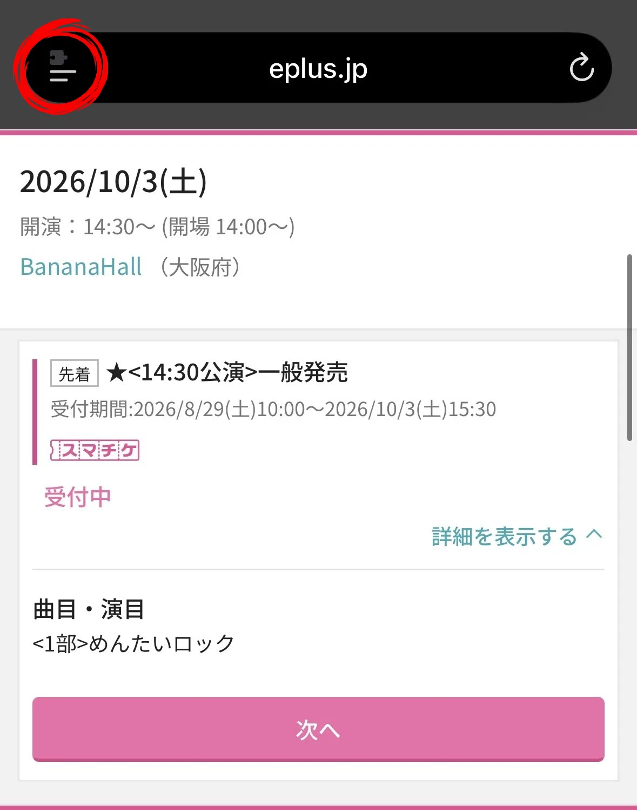
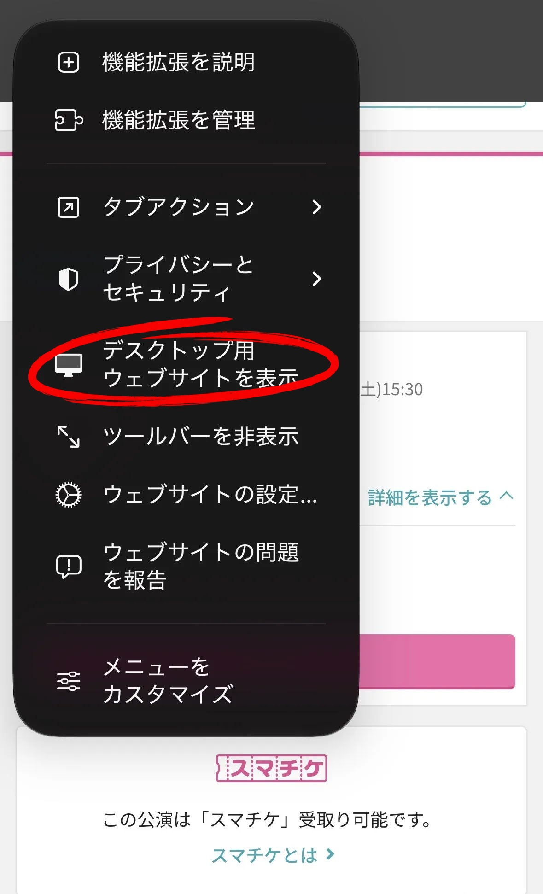
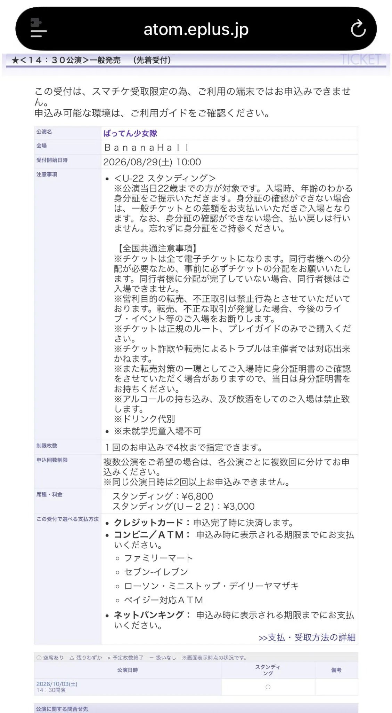
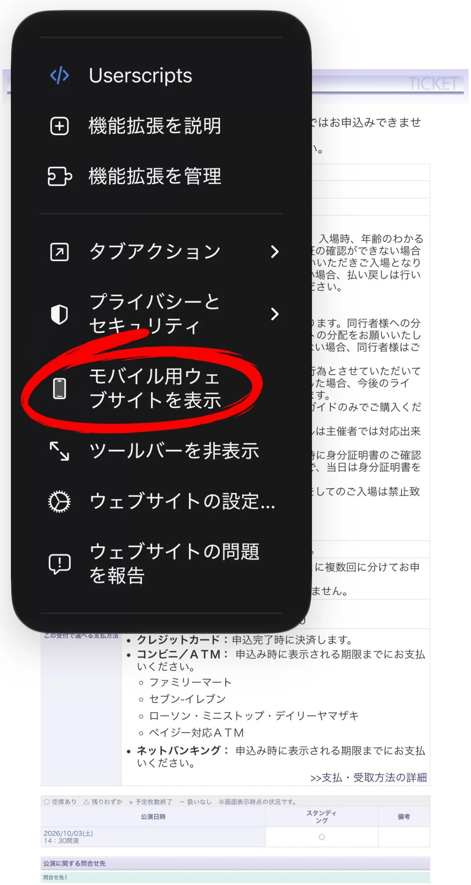
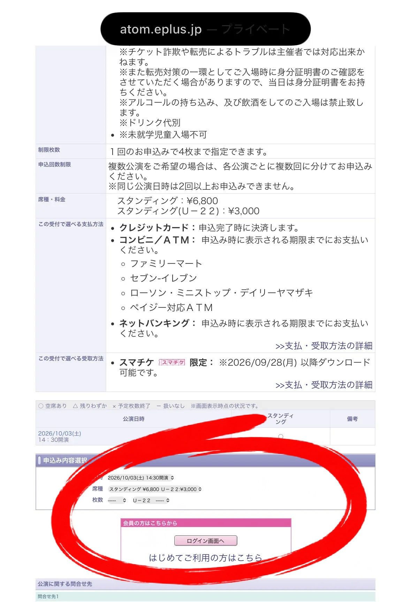

1
デスクトップ用ウェブサイトを表示
公演一覧ページからブラウザのメニューを開きます。
Firefoxの場合：メニューの「PC版サイト」をONにします。


Firefoxの場合：「PC版サイト」をON
2
モバイル用ウェブサイトに切り替える
PC用サイトが表示されたことを確認してから、メニューを開き直します。
Firefoxの場合：メニューの「PC版サイト」をOFFにします。


Firefoxの場合：「PC版サイト」をOFF
3
枚数選択とログインボタンを確認
モバイル用に切り替えた後も、PC用の画面のまま申込操作の項目が現れることを確認します。

※画面の表示やメニュー名は、iOSのバージョンによって異なる場合があります。